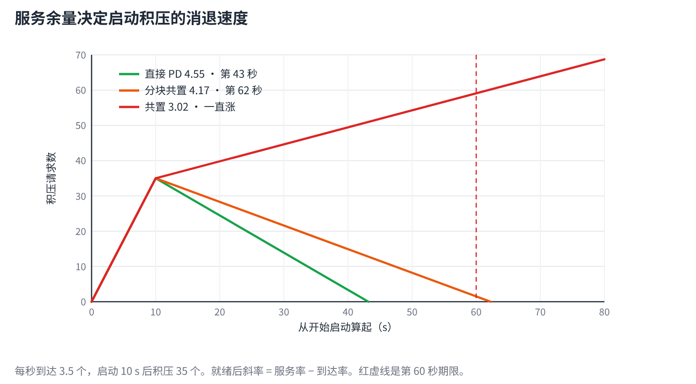
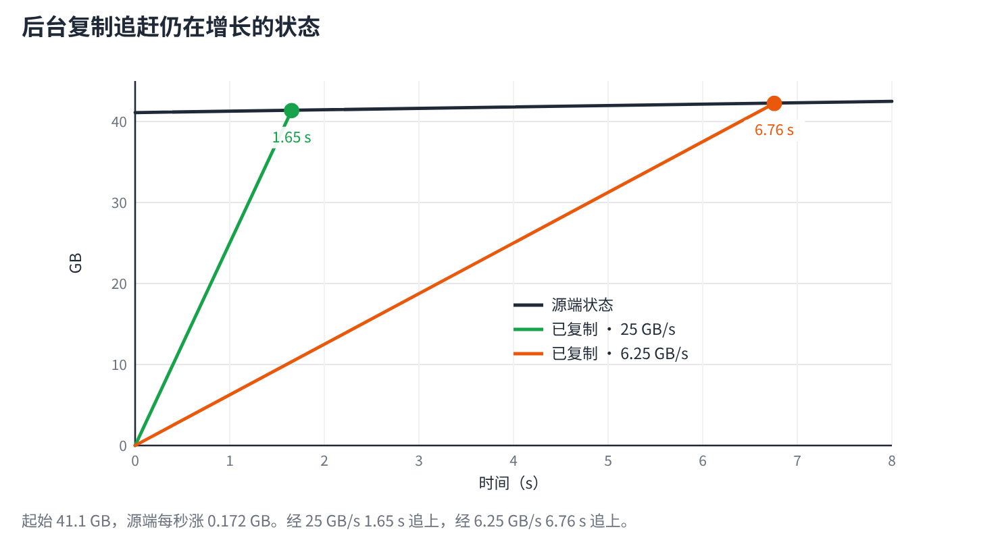
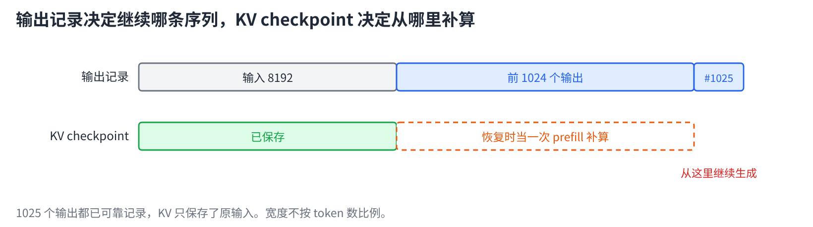
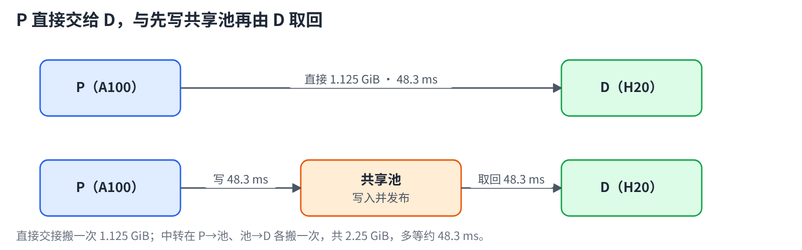
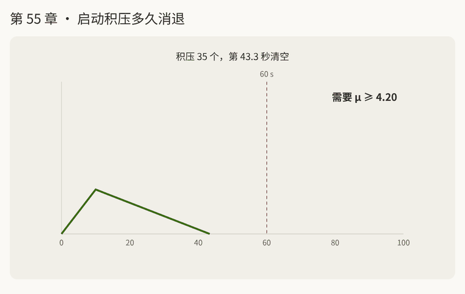

第 55 章 · 扩缩容、故障恢复与部署方案比较：积压多久消退
本地运行
git clone https://github.com/wikieden/ai-infra-from-constraints
cd ai-infra-from-constraints/code/notebooks
pip install jupyterlab torch numpy
jupyter lab ch55_scale_compare.ipynb也可以下载后直接用 VS Code 打开 .ipynb 运行。需要 GPU 的章节在 Colab 里选「代码执行程序 → 更改运行时类型 → GPU」。
本章回答：新副本启动 10 秒，期间积下的 35 个请求要多久才能消化？多 10 秒的图捕获要多少步才回本？迁走一个 D worker 时后台复制怎么追上仍在增长的状态？TP4 换 TP8 为什么换了 4 倍带宽只快 17%？故障后怎么知道从哪接着生成？八卡服务最后选哪个方案，最低要多少服务率，成本怎么算？负载变了方案怎么跟着变？
讲解日期：2026-11-24 · 上一章：第 54 章 KV 的分布、共享与请求路由 · 下一章：第 56 章 训练的容量与时间估算
对应原文：materials/ai-infra-book/manuscripts/09-分布式推理.md§9.6 L668–L729、§9.7 L730–L806（例 9.8，图 9-42 至 9-46）
本章缩写：WAL = Write-Ahead Log（预先 / 写入 / 日志）· TP = Tensor Parallelism（张量 / 并行）· SP = Sequence Parallelism（序列 / 并行）· Elastic EP（弹性专家并行）· CUDA Graph（把一串 kernel 录下来重放的执行图）。全部缩写见 缩写与术语表
讲解
第一步：启动、预热与积压消退（2026-11-24）
类比：早高峰的收费站。 一个窗口关了 10 分钟，车排起长龙；重新开了以后，每分钟能多放走的车 = 放行速度 − 来车速度，差越小，长龙消得越慢。
原文 L672–L692：新副本要经过进程与 tokenizer 初始化、读权重与分片、编译、KV 容量探测、图捕获（第 29 章 的 CUDA Graph）；启动总时间看最长依赖路径。
- 图捕获让启动多 \(T_s\)、之后每步省 \(\delta\)：\(N\delta - T_s\)。多 10 s、每步省 0.2 ms，要 50,000 步持平；batch 32 约 160 万个输出 token。收益按批执行次数算。
- 启动期间积压 \(\lambda T_s\)，就绪后能力 \(\mu > \lambda\)：
| 方案 | μ（请求/s） | 每秒消化积压 | 从启动算起排空 |
|---|---|---|---|
| 直接 PD | 4.55 | 1.05 | 第 43 秒 |
| 理想分块共置 | 4.17 | 0.67 | 第 62–63 秒 |
| 不分块共置 | 3.02 | −0.48 | 一直增长 |

图 55-1 · 每秒到达 3.5 个，启动 10 秒后积压 35 个。斜率 = 服务率 − 到达率。竖虚线是例 9.8 的第 60 秒期限。
- 积压就绪后一起涌入，并发预取会改变谁先执行：8 个请求同时到，前 4 个占满预取额度在等数据，没登记预取的直接 prefill，反而先完成。要先拿到预取空间才用得上缓存。
- 权重固定在不可改介质上时，扩同版本加同型卡，换版本要换卡；容量规划要给新旧版本并存留资源。
一句话：积压的消退速度是服务率减到达率；余量小，消退就慢。
第二步：运行中迁移与重配置（2026-11-24）
类比：搬家时房东还在住。 先把不动的家具搬走，人继续住；最后停一下，把这几天新添的东西一起搬走，再交钥匙。
原文 L694–L712：迁走一张 H20 上的 D worker，32 条请求平均 8704 token，KV 约 41.1 GB；源端每秒 1166 次 decode，每次加 144 KiB，状态每秒只涨约 0.172 GB。
| 链路 | 追上时间 | 期间新增 |
|---|---|---|
| 200 Gbit/s，25 GB/s | 1.65 s | 0.28 GB |
| 50 GbE，6.25 GB/s | 6.76 s | 1.16 GB |

图 55-2 · 两条线的垂直距离是还没复制的数据；复制速率等于增长速率时两线平行，永远追不上。
- 最后的交接点同时确定状态版本和执行权，防止目标漏掉源端最后的更新。
- 切换并行方式（TP ↔ SP×TP，ArcticInference 的案例）：预先保留两种模式的权重和执行图能缩短等待，但挤占 KV 空间。Elastic EP 扩组时，新卡先拿专家权重才能接分派。
- TP4 → TP8：网络传 16.4 GB，50 GbE 2.63 s、200 Gbit/s 0.66 s，差 4 倍；但建通信组、准备执行图、恢复接收若串行占 9 s，总时间 11.6 vs 9.7 s，只快 17%。同机 NVLink 最忙卡 4.7 GB 只要 15.7 ms，总时间还是约 9 s。剩下的全是软件准备：提前建通信组、预捕获执行图、让准备和传输重叠（第 05 章 的"差距不是漏项就是开销"）。
一句话：后台复制按斜率差追赶；搬移逼近物理下界后，瓶颈是软件准备。
第三步：故障后从哪接着生成（2026-11-24）
类比：直播断线。 观众已经看到的部分（输出记录）定了接下来从哪讲；后台存档（KV checkpoint）定了要重讲多少铺垫。
原文 L714–L728：三种恢复目标：恢复状态继续 decode；按已确定的 token 重做 prefill；重新采样一段（会产生不同后缀，对 RL 的 rollout 也改变了样本）。

图 55-3 · 1025 个输出都已可靠记录，KV 只存了原输入：把前 1024 个输出当一次 prefill 补算，重建 9216 token 的 KV，再处理第 1025 个继续生成。宽度不按比例。
- WAL（预写日志）在对外确认之前可靠保存已确定的输出序列；KV 存的是这段序列已完成的计算。前者定继续哪条输出，后者定还要重做多少。DeepSeek V4 的生成服务用这类机制，恢复时还要保持权重版本、位置索引和 decode 状态一致。
- 故障影响范围由同步组决定：TP 或 EP 组丢一张卡，整个协作实例的请求都停；其他完整副本继续服务。
一句话：输出已返回不等于 KV 已保存；按记录补算，不要重新采样。
第四步：例 9.8，八卡服务选哪个（2026-11-24）
类比：比搬家公司报价。 先看搬不搬得完（吞吐），再看能不能按期（排空），最后比价（成本）。
原文 L730–L789：先比直接交接和经共享池中转：

图 55-4 · 中转每请求搬两次（2.25 GiB），多等约 48.3 ms；只有后续还会复用时才有意义。
| 方案 | 每请求通道载荷 | 计算能力 | 通道能力 | 总体上限 |
|---|---|---|---|---|
| 八个完整副本 | 0 | 3.02 | — | 3.02 |
| 直接 PD（4 A100 做 P、4 H20 做 D） | 1.125 GiB | 4.55 | 20.7 | 4.55 |
| PD + 共享池中转 | 2.25 GiB | 4.55 | 10.3 | 4.55 |
| 直接 PD，紧凑 MLA | 549 MiB | 4.55 | 43.4 | 4.55 |
| PD + 共享池，紧凑 MLA | 1.07 GiB | 4.55 | 21.7 | 4.55 |
- 容量检查：一张 H20 驻留 32 条活动请求 40.5 GiB + 接收缓冲 1.125 GiB + 权重 15.3 GiB ≈ 56.9 GiB，放得进 89.4 GiB。
- 完整副本先排除；两种 PD 都由计算池限制。前缀互不复用，中转只是让通道流量翻倍（3.5 请求/s 时 4.2 vs 8.5 GB/s），选直接 PD。
- 按期排空所需的最低服务率：
直接 PD 4.55，余量只有约 8%。kernel 效率只有假设值的九成时 D 池 4.10，排空拖到约第 68.5 秒，错过期限。
- 成本：八张卡每小时 8 元、实际每秒 3.5 个 → 每千请求约 0.63 元。满载 3.02 / 4.55 请求/s → 0.74 / 0.49 元。多出来的能力用来消化突发和启动积压，不会凭空多出请求。若只有四分之一合格，每千个合格请求 1.95 元：
一句话：先排除接不住的，再看按期排空的余量，最后按合格请求算成本。
第五步：负载一变，方案跟着变（2026-11-24）
类比：搬家公司接的活从"一户一车"变成"一户三车"。
原文 L791–L805：
| 变化 | 结果 |
|---|---|
| 另一个实例会再复用一次 KV | 中转 + 取回 96.6 ms vs 重算 856 ms，每次省约 760 ms；但每对请求搬 3.375 GiB，3.5 对/s 要 12.7 GB/s，通道上限降到 6.9 对/s |
| P 本地命中 6144 前缀 | 完整副本 4.90（第 35.1 秒排空）、原 4P/4D 4.55（第 43.2 秒）、2P/6D 5.69（第 26.0 秒） |
| 输出增到 4097 | 最佳 2P/6D 也只有 1.26 请求/s；持续接住要 3 组八卡（3.78），按期排空要 4 组（5.04）：24 张 vs 32 张 |
| D 阶段加速 4 倍 | 原来 1P : 4D 平衡，加速后改 1P : 1D，释放三个 D 实例 |
把本部分的推导用到新系统的顺序：① 把每请求的工作换成各类资源需求；② 按整数分配找最忙的池；③ 按执行顺序计入状态传输和内存；④ 用服务率 − 到达率算积压持续多久。瓶颈是 D，加 P 没用；瓶颈是共享通道，加计算副本只会让更多请求等取回。
场景代码：vLLM 的 sleep mode 让空闲实例释放显存而不退出进程，扩容时 wake_up 比冷启动快（真实 API）：
from vllm import LLM
llm = LLM(model="Qwen/Qwen3-8B", enable_sleep_mode=True)
llm.sleep(level=1) # 权重卸到主机内存、丢掉 KV，进程和执行图还在
# ……负载上来了
llm.wake_up() # 权重搬回 GPU，跳过初始化和图捕获
一句话：一个阶段变快，收益体现为同样的工作要的资源变少；配比要跟着重算。
动画演示：启动积压怎么消退

可交互版：animations/55-scale-compare.html（滑块：服务率 3–6 请求/s；到达率 2–5 请求/s；启动时间 0–30 s）。
怎么看：
- 曲线是积压请求数随时间变化：启动期间按到达率上升，就绪后按 μ − λ 下降（第一步）；
- 竖虚线是 60 秒期限，清空点在期限内标绿，否则标红；
- 播放：直接 PD 4.55（第 43 秒）→ 理想分块 4.17（错过）→ 九成效率 4.10（错过）→ 不分块 3.02（一直涨）→ 启动缩到 5 秒。
练习与作答记录
题 1（第一步）：到达 3.5 请求/s，启动 20 s，服务率 4.55。积压多少？第几秒清空？要在第 60 秒清空，μ 至少多少？
作答记录：（待作答）
题 2（第二步）：要迁移的状态 60 GB，源端每秒涨 0.5 GB，链路 12.5 GB/s。多久追上？链路降到多少就永远追不上？
作答记录：（待作答）
题 3（第四步）：八张卡每小时 8 元，方案能力 4.55 请求/s，实际到达 3.5，95% 的请求合格。每千个合格请求多少元？
作答记录：（待作答）
口诀
收费站关了再开，长龙按放行减来车的速度消；
房东还在住先搬不动的，最后停一下交钥匙；搬得再快也得等装修；
直播断线，观众看到哪就从哪讲；
先看搬得完，再看按期，最后按合格的单子算价钱。
本章复习卡片
I186（T_drain = λT_s/(μ − λ)：4.55 第 43 秒、4.17 错过、3.02 一直涨；图捕获 50,000 步回本）、I187（后台复制 V₀/(B − g)：1.65 / 6.76 s；TP4→TP8 4 倍带宽只快 17%，9 s 是软件准备；WAL 与 KV 各管什么）、I188（例 9.8：直接 PD；μ ≥ 4.2、余量 8%；每千请求 0.63 / 0.49 / 1.95 元；负载变化后的新配比）。练习做完后，按答错、卡住的地方再补。
附录 · 延伸阅读
留给以后深入学习用，不影响本章主线。★ 是建议先读的。
推荐阅读
| 读什么 | 读哪里 | 读它为了什么 |
|---|---|---|
| ★ AII 第 9 章 | §9.6–§9.7 L668–L806 | 本章原文 |
| Breaking the Ice（启动开销研究） | 分阶段启动分析 | 启动的最长依赖路径 |
| vLLM 文档 | Sleep Mode | 快速扩容 |
| 第 14 章 持续到达的负载 | 积压 | 同一个流体模型 |
| 第 43 章 从通信改进到任务完成 | 故障开销 | 训练侧的对应 |
数学原理
- 流体模型：积压的变化率 = 到达率 − 服务率；启动期间服务率为 0。
- 追赶问题：两条直线的相对速度是斜率差。
- 有效成本：分母只数合格完成的请求或任务。
公式清单
| 公式 | 意思 |
|---|---|
| \(N\delta - T_s\) | 启动换每步收益 |
| \(T_{\mathrm{drain}} = \lambda T_s/(\mu - \lambda)\) | 积压消退 |
| \(t = V_0/(B_{\mathrm{copy}} - g)\) | 后台复制追上 |
| \(\mu \ge \lambda + \lambda T_s/(D - T_s)\) | 按期排空的最低服务率 |
| \(C_{\mathrm{effective}}\) = 总成本 / 合格数 | 有效成本 |
代码对照：把本章的数字用代码算一遍
代码
ai-infra/solutions/chapter-code/ch55_scale_compare.py，测试tests/test_ch55.py：
bash cd ai-infra/solutions/chapter-code uv run python ch55_scale_compare.py uv run pytest tests/test_ch55.py
| 讲义 | 写法 | 跑出来 |
|---|---|---|
| 第一步 | drain_s(3.5, 10, mu)、breakeven_steps(10, 0.2e-3) |
第 43.2 / 62.2 秒；50,000 步 |
| 第二步 | catch_up_s(41.1, bw, 0.172) |
1.65 / 6.76 s |
| 第四步 | min_rate(3.5, 10, 60)、cost_per_k(8, rate, q) |
4.2；0.63 / 0.74 / 0.49 / 1.95 元 |
| 第五步 | 前缀命中三种方案的 drain_s |
第 35.1 / 43.2 / 26.0 秒 |
代码里才看得到的 3 件事：
- 理想分块共置用原文的 4.17 算出第 62.2 秒，原文写"第 63 秒"，是向上取整的说法；两种说法都错过第 60 秒。
- 直接 PD 的 μ 用 4 / 0.8782 = 4.555，不是 4.55，所以九成效率排空是第 68.4 秒（原文 68.5）。
min_rate里期限 60 s 包含启动的 10 s，真正用来消化积压的只有 50 s。
自己改一改（不影响练习答案）：
- 给
drain_s加突发：第 20 秒多来 20 个请求，看直接 PD 还赶不赶得上第 60 秒。 - 用
catch_up_s找"永远追不上"的链路带宽。 - 把
cost_per_k换成按 GPU 秒计费：每 GPU 秒 x 元，比较按小时预留与按用量。